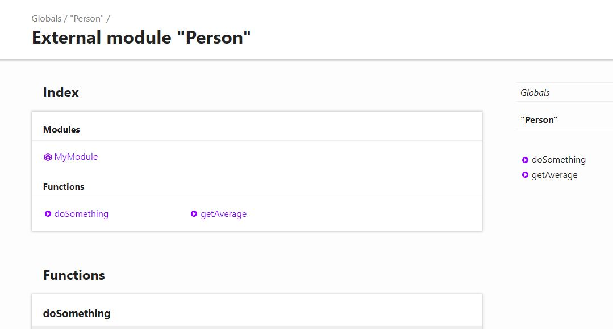

Installation
To install the typedoc globally,npm install -g typedoc --verbose
To install for development
npm install --save-dev typedoc --verbose
Generate Documentation
In case all source code .ts files are in 'src' folder and the documentation is to be generated in 'docs' folder.
/**
* Actual module comment.
* @preferred
*/
module MyModule { }
/**
* Dismissed module comment.
* This is the longer comment but will be dismissed in favor of the preferred comment.
*/
/**
* Returns the average of two numbers.
*
* @remarks
* This method is part of the {@link core-library#Statistics | Statistics subsystem}.
*
* @param x - The first input number
* @param y - The second input number
* @returns The arithmetic mean of `x` and `y`
*
* @beta
*/
function getAverage(x, y) {
return (x + y) / 2.0;
}
/**
* @param text Comment for parameter ´text´.
*/
function doSomething(target: any, text: string): number;
/**
* @param value Comment for parameter ´value´.
* @returns Comment for special return value.
*/
function doSomething(target: any, value: number): number;
/**
* Comment for method ´doSomething´.
* @param target Comment for parameter ´target´.
* @returns Comment for return value.
*/
function doSomething(target: any, arg: any): number {
return 0;
}
To generate the Documentation, run following command
typedoc --out docs src
typedoc --out [output dir] [source dir]
This will create a Documentation inside 'docs' folder
